Initial setup of Keycloak
That we can use Keyclaok for our jax-rs service and our Angular2 frontend
we have to create some roles and a user.
Start a local Keycloak server
That we can test our application on the local machine we've to start a Keycloak server locally.
For our local Keycloak server we don't need SSL therefore we can use the officially image directly. But first we need to create a local folder where Keycloak can store its persistent data:
mkdir -p ~/Desktop/dockervolumes/keycloakdata
Set the rights of the folder to 1000:1000:
chown -R 1000:1000 ~/Desktop/dockervolumes/keycloakdata
And now we can start our local Keycloak server.
docker run -d -e KEYCLOAK_USER=admin -e KEYCLOAK_PASSWORD=admin -p 8280:8080 -v ~/Desktop/dockervolumes/keycloakdata/:/opt/jboss/keycloak/standalone/data --name keycloak jboss/keycloak:2.4.0.Final
Create Keycloak roles and users
Open the Keycloak console on http://localhost:8280/auth/admin.
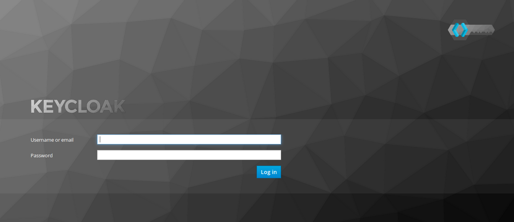
Login in with the user admin and the password admin. We've defined this
password on the startup of the Docker container.
Keycloak displays the Master realm. That's the realm for Keycloak itself.
For our application we need an own realm therefore we've to create one.
Click on Master and a button Add realm appears.
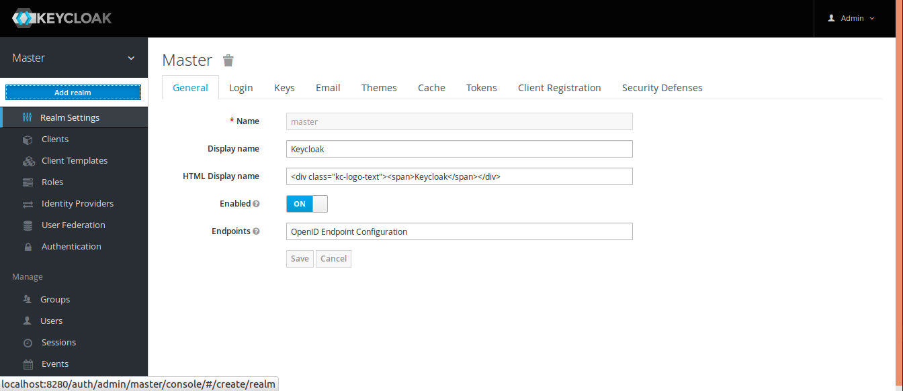
We choose the name battleapp-local for our local Keycloak.
We also have to create two realms on our Keycloak that we've started in Kubernetes. One for the test stage and one for the production stage. I called them
battleapp-testandbattleapp.
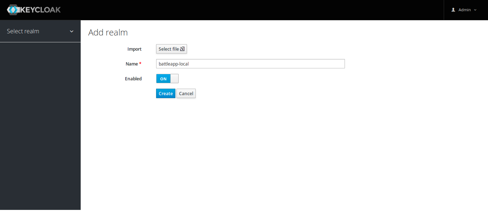
Click Create.
First we're going to create two roles user and admin. Change to the
Roles tab and create these two roles.
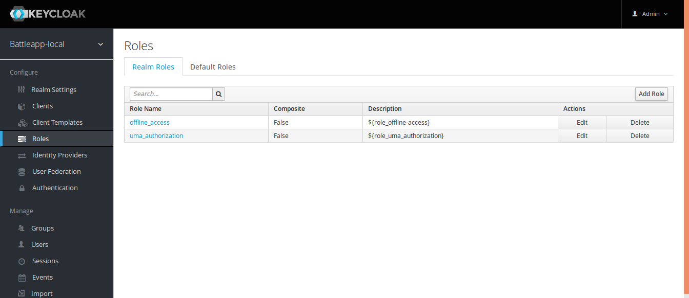
Click on the button Add Role.
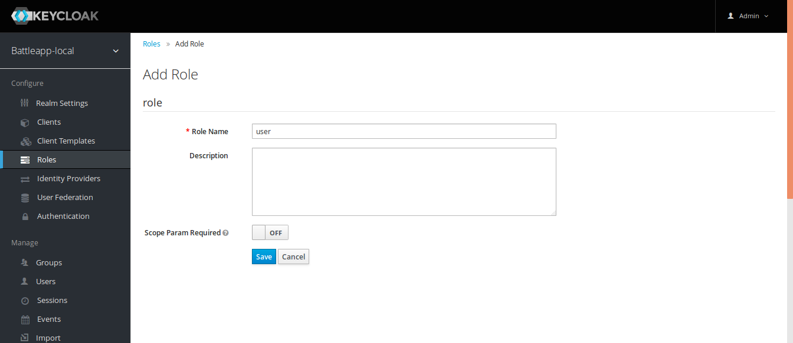
Click Save and do the same for admin.
When we've the roles we can create a user and add these roles to the user.
Change to the Users tab and create a user.
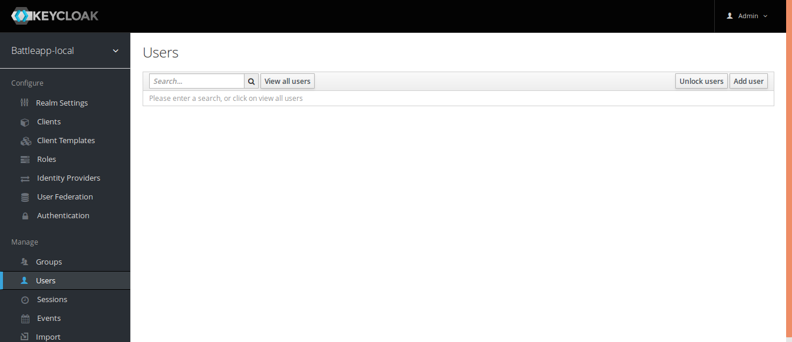
Click on the button Add user.
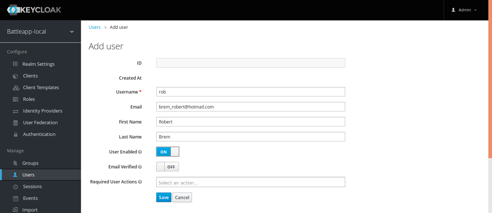
Click Save.
That the user can login he need a password. Therefore we've to change
to the Credentials tab and enter a password.
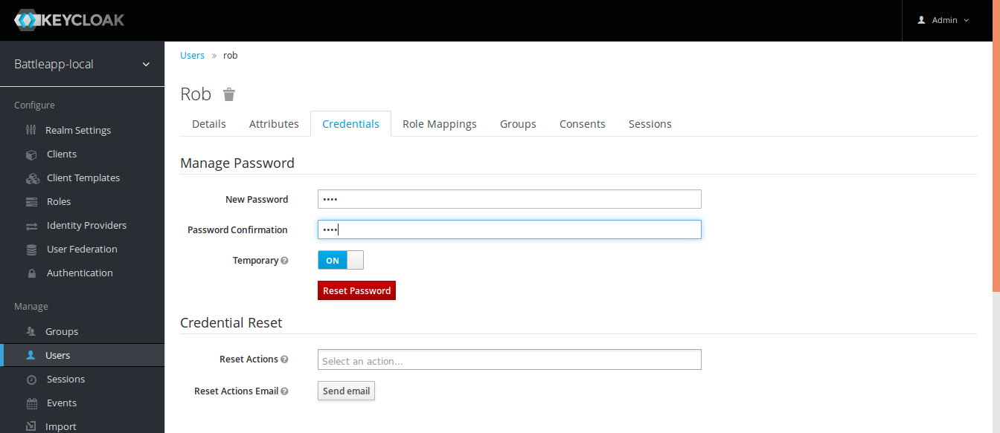
Click Reset Password -> Change Password.
The last setting we've to make is to assign the created roles to our user.
Change to the Role Mappings tab and assign the user and admin role
from Available Roles to Assigned Roles.
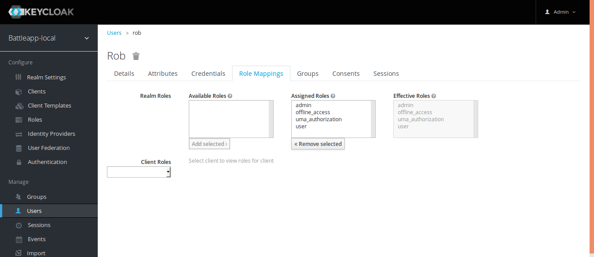
Add the REST service and the frontend
Keycloak need to know where our applications are running. We can setup our
two microservices in the Client tab.
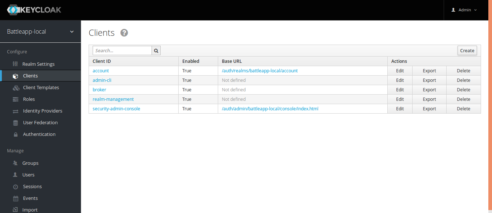
Click on the button Create.
The REST service is the first service we're going to create.
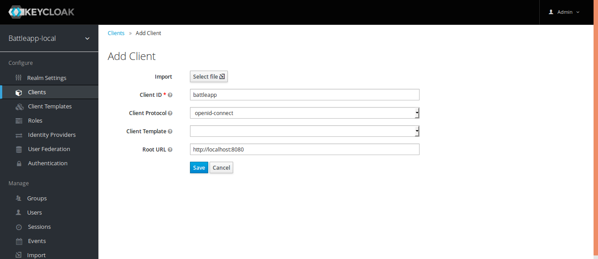
Click Save.
Change the Access Type to bearer-only and click Save.
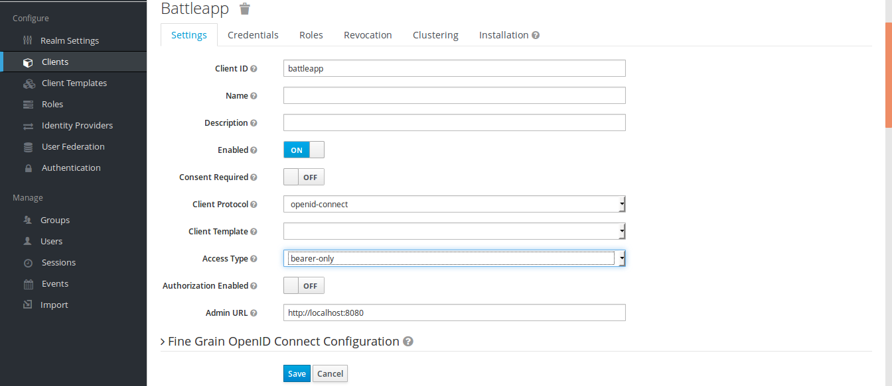
That was all for the REST service now we can create the frontend service.
Click Save.
The frontend service is of the already chosen Access Type public.